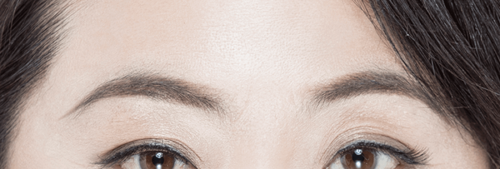
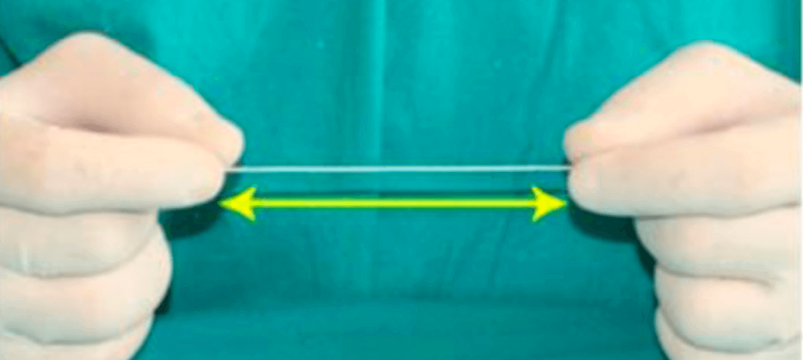
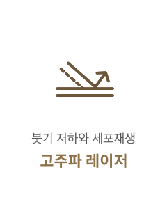

강한 고정력으로
오래 지속되는
#반영구
실리프팅
-

수술 시간
1시간
-

마취방법
수면/국소마취
-

실밥제거
5~7일 후
-

내원치료
2~3회
-

회복기간
5~7일 후
반영구 실리프팅이란?
실리프팅은 작은 돌기가 붙은 인체에 무해한 의료용 실을 피부 아래로 삽입해
연부 조직을 균일하게 당겨서 늘어진 피부를 당겨주고 탄력 잃은 피부를 팽팽하게 리프팅해주는 시술입니다.
연세자연미성형외과에서는 녹지 않는 실(엘라스티꿈/리본)을 사용해
오랜시간 반영구적으로 효과를 유지할 수 있습니다.
BEFORE
AFTER
엘라스티꿈리프팅
연세자연미에서 사용하는 ‘엘라스티꿈’은 특수 소재의 밴드를 이용하여
딱딱한 일반적인 실과는 달리 실제 인대처럼 자연스러운 움직임과 탄력을 회복합니다.
01
ITALY에서 제조된 특허받은 밴드
ITALY 성형외과전문의 Dr. Sergio Capurro가 의학적 기술과 노하우를 반영해 개발한 밴드로
탄력실(elaticum)을 이용한 신생인대(neoligament)형성으로 처진피부와 연부조직을
다시 거상하여 그 효과가 오랬동안 자연스럽게 유지되도록 하는 방법입니다.
02
강한 탄성력
엘라스티꿈은 강한 탄성력으로 피부의 움직임을 방해하지 않고 자유자재로 늘어납니다.
자연스러운 움직임과 얼굴 탄력을 회복합니다.
-

일반실
딱딱하며 길이가 정해져 있음
-
엘라스티꿈
강한 탄성력으로 자유자재로 늘어남
03
안정적인 조직결합
엘라스티꿈은 강한 탄성력으로 피부의 움직임을 방해하지 않고 자유자재로 늘어납니다.
자연스러운 움직임과 얼굴 탄력을 회복합니다.

실리콘
탄성이 강해
피부의 움직임을
방해 받지 않음
폴리에스터
인조 인대 역할로
기존 조직과
안정적으로 결합
리본리프팅
연세자연미에서 사용하는 ‘리본’은 메쉬와 돌기가 있어 조직을 리프팅하고
측두부 고정메쉬에 리프팅된 상태에서 고정하는 수술방법입니다.
01
안정성이 검증된 제품
리본은 KFDA와 유럽 CE의 허가를 받은 입체구조의 메쉬와
탈장수술, 심장수술, 안과수술, 뇌수술 등에 사용되는
생체적합성이 우수한 폴리프로필렌으로 만들어진
특수코그실로 이루어져 있습니다.
02
확실한 효과
엘라스티꿈은 미세 실리콘에 폴리에스터가 감싸져 있는 형태로
밴드 사이 공간에 자가조직이 들어가 수주 안에 인조인대 역할을 하게 됩니다.
돌기달린 실
(코크)
피부탄력을 유지시켜주는
콜라겐 자극 밑 생성 촉진
그물모양의 실
(매쉬)
빠르게 피부 내에 유착되어
늘어진 피부를 단단히 고정
연세자연미리프팅 디자인
연세자연미는 피부조직 손상, 통증, 흉터의 최소화를 생각하며 정교하게 시술합니다.


오랜 지속
기존 실 리프팅에 비해 리프팅 효과가
5년 이상 장기 지속됩니다.

함께하면좋은 시술
연세자연미성형외과는 개인의 상태에 따른 노화 증상과 원인에 맞는
여러가지 시술들을 복합적으로 진행하는 맞춤형 안티에이징 수술법으로
자연스럽게 젊어지는 아름다움을 선물해드립니다.
- 